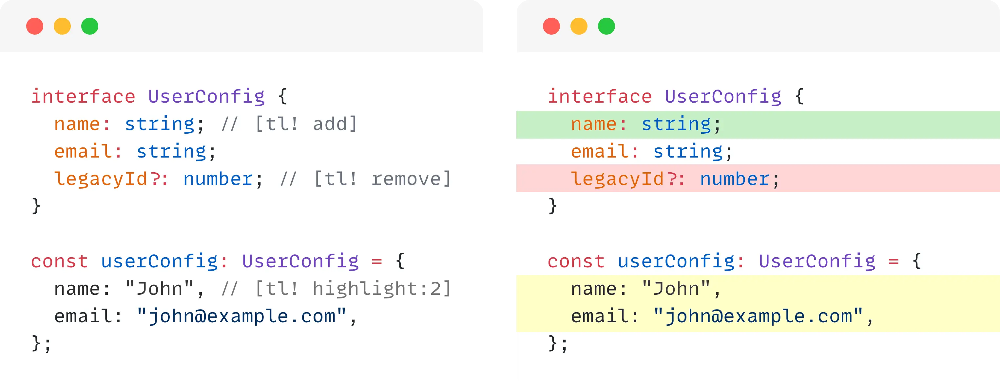

Prism Highlight Lines Plugin
Highlight lines using comments in your code snippets

Installation
Install with your favorite package manager:
npm install prism-highlight-lines-pluginThen, import the plugin after importing Prism.
import Prism from 'prismjs';
import 'prism-highlight-lines-plugin';
import 'prism-highlight-lines-plugin/src/style.css';Alternative: CDN
<!-- Prism Core -->
<link rel="stylesheet" href="https://cdn.jsdelivr.net/npm/prismjs@1/themes/prism.min.css">
<script src="https://cdn.jsdelivr.net/npm/prismjs@1/prism.min.js"></script>
<!-- Add language components as needed -->
<script src="https://cdn.jsdelivr.net/npm/prismjs@1/components/prism-javascript.min.js"></script>
<!-- Prism Highlight Lines Plugin -->
<link rel="stylesheet" href="https://cdn.jsdelivr.net/npm/prism-highlight-lines-plugin@latest/src/style.css">
<script src="https://cdn.jsdelivr.net/npm/prism-highlight-lines-plugin@latest/dist/index.min.js"></script>Usage
This plugin lets you highlight lines in your code snippets using comments with special annotations.
All annotations start with [tl! and end with ].
There are 3 types: highlight, add and remove.
Examples
Example 1: Add
interface UserConfig {
name: string; // [tl! add]
email: string;
legacyId?: number;
}
interface UserConfig {
name: string; // [tl! add]
email: string;
legacyId?: number;
}Example 2: Remove
interface UserConfig {
name: string;
email: string;
legacyId?: number; // [tl! remove]
}
interface UserConfig {
name: string;
email: string;
legacyId?: number; // [tl! remove]
}Example 3: Highlight
interface UserConfig {
name: string;
email: string; // [tl! highlight]
legacyId?: number;
}
interface UserConfig {
name: string;
email: string; // [tl! highlight]
legacyId?: number;
}Ranges
You can highlight multiple lines using a : and an integer to specify how many lines to highlight.
Examples
Example 1: Range
interface UserConfig {
name: string; // [tl! add:2]
email: string;
legacyId?: number;
}
interface UserConfig {
name: string; // [tl! add:2]
email: string;
legacyId?: number;
}Example 2: Negative range
interface UserConfig {
name: string;
email: string;
legacyId?: number; // [tl! remove:-2]
}
interface UserConfig {
name: string;
email: string;
legacyId?: number; // [tl! remove:-2]
}Example 3: Multiple Ranges
interface UserConfig {
name: string;
email: string; // [tl! highlight:2 remove:-1]
legacyId?: number;
}
interface UserConfig {
name: string;
email: string; // [tl! highlight:2 remove:-1]
legacyId?: number;
}Languages
Works with all Prism.js supported languages including:
- JavaScript, TypeScript, Java, C, C++, C#, PHP, Go, Rust, Swift, Kotlin, Dart
- Python, Ruby, Perl, Bash, Shell, PowerShell, YAML, R
- Lua, Haskell, Elm, Lisp, Clojure, Scheme
- MATLAB, TeX, LaTeX
- CSS, SCSS, Sass, Less, SQL
- HTML, XML, Blade templates
Examples
Example 1: HTML
<form action="/subscribe"> <input name="email"> <!-- [tl! highlight] --> <button type="submit">Subscribe</button> </form>
<form action="/subscribe">
<input name="email"> <!-- [tl! highlight] -->
<button type="submit">Subscribe</button>
</form>Example 2: PHP
function getUser($id) {
return User::find($id); // [tl! remove]
return User::findOrFail($id); // [tl! add]
}
function getUser($id) {
return User::find($id); // [tl! remove]
return User::findOrFail($id); // [tl! add]
}Example 3: Bash
#!/bin/bash npm install # [tl! highlight] npm run build npm test
#!/bin/bash
npm install # [tl! highlight]
npm run build
npm testBrowser Support
Works in all modern browsers that support:
- ES6+
- MutationObserver
- Prism.js
License
MIT